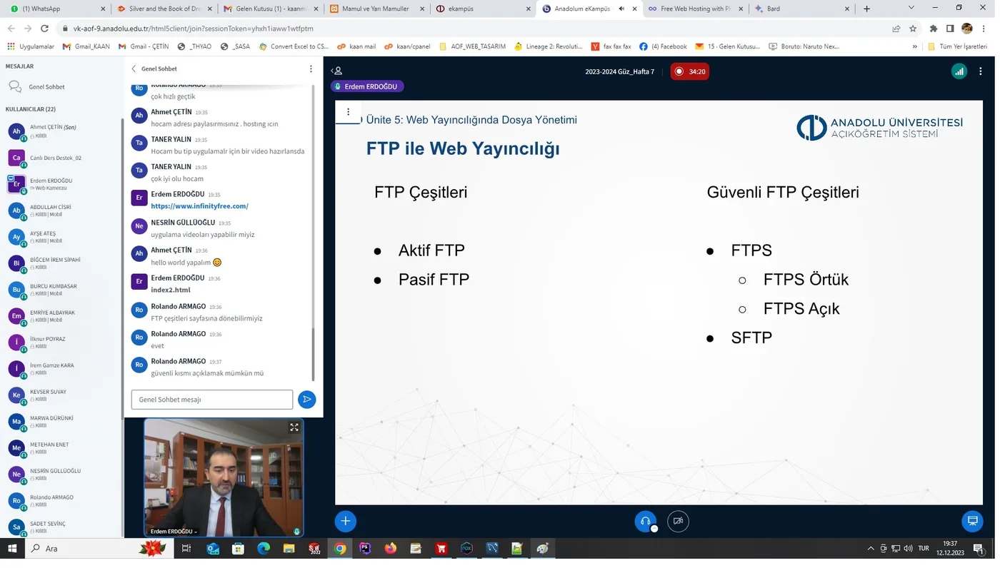

Yapay zekâyla tanıştıktan sonra aklıma gelenleri denemeye başladım.
Burası bir başarı vitrini değil. Çalışan sistemleri, bozulan denemeleri, öğrendiğim yöntemleri ve yarım kalan fikirleri aynı yerde tuttuğum kişisel çalışma günlüğü.
Bir unvan aramadım. Bir fikrin gerçekten çalışıp çalışmayacağını görmek istedim.
Uzun yıllardır üretim ve iş dünyasının içindeyim. Kodlama, çizim, yapay zekâ ve video ise hayatıma daha sonra girdi. Kendimi yeni bir meslek adıyla tanımlamak yerine, aklıma takılanları çalışan bir şeye dönüştürmeye başladım.

ARŞİVDEN · İlk cesaretin geldiği ders ekranı01
BAŞLANGIÇ NOKTASI
Mehmet Fırat hocamın verdiği cesaret
Yapay zekâyla tanışmamda ve ilk büyük denemeye başlamamda Mehmet Fırat hocamın yeri ayrı. Her e-postama sabırla ve nazikçe cevap verdi. Verdiği cesaretle işyerim için bir üretim takip sistemi yapmaya başladım.
Bir ders ödevi olarak kalmadı. İşyerinde gerçek bir ihtiyaca cevap verdi, hâlâ çalışıyor ve aklıma yeni bir şey geldikçe gelişmeye devam ediyor. Sonraki bütün projeler için asıl eşik buydu: Bir fikrin yalnızca zihinde kalmak zorunda olmadığını gördüm.